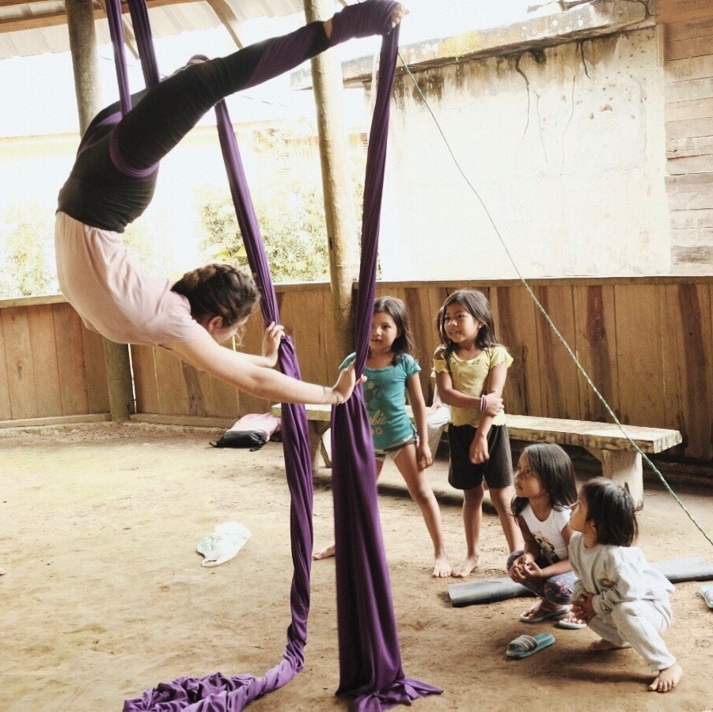

Welcome to my website
Hi! I'm Anna Calle, a graduate student specializing in Conservation Planning at the Bren School of Environmental Science & Management. I'm originally from Ecuador but currently live in Santa Barbara, California.
 I’m passionate about protecting our planet and finding innovative solutions to environmental issues. This interests have led me to work in several conservation projects. Some of them include habitat restoration at the Channel Islands National Park, protection of threatened species at Coal Oil Point Reserve, sea turtle monitoring in Costa Rica, and reforestation work with indigenous communities in the Amazon. My goal is to use my experience and education in environmental science to develop effective management strategies that preserve the biodiversity of our planet and ensure the well-being of our communities.
I’m passionate about protecting our planet and finding innovative solutions to environmental issues. This interests have led me to work in several conservation projects. Some of them include habitat restoration at the Channel Islands National Park, protection of threatened species at Coal Oil Point Reserve, sea turtle monitoring in Costa Rica, and reforestation work with indigenous communities in the Amazon. My goal is to use my experience and education in environmental science to develop effective management strategies that preserve the biodiversity of our planet and ensure the well-being of our communities.
I believe data analysis is an essential tool for solving environmental problems. Conclusive data can help us understand the magnitude of human impact, generate projections of future scenarios, guide management decisions, and inform government agencies. For these reasons, I’m pursuing a focus on Environmental Data Science as part of my graduate education and I intend to continue learning how to use data analysis in addressing environmental challenges.
In addition to environmental and data science, some of my interests include traveling, finding new outdoor activities, and practicing aerial silks. If I’m in Ecuador, playing with my cat Rayas is one of my favorite activities!